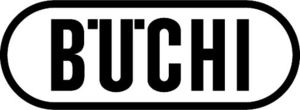

Trade Mark Journal No.2025/015 11 April 2025
WO0000001847191 (1,9,11,42)
Office of origin: Switzerland
Date of International Registration:18 October 2024
Date of designation in the UK:
18 October 2024

International priority date claimed: 14 May 2024
(Switzerland)
(816773)
- Class 1
- Chemicals, chemical reagents and test kits, in particular for laboratory use and for commercial, scientific and research purposes.
- Class 9
- Glass apparatus for laboratories; Scientific apparatus, devices and instruments for laboratories; measuring apparatus and instruments; optical apparatus and instruments; spectrometers, in particular portable spectrometers; chromatography columns and chromatography apparatus for laboratory use, in particular for supercritical fluid chromatography (SFC); heating and vibrating platforms for laboratory use; shakers for laboratory use; reaction stations for laboratory use; temperature adjustable synthesis stations; bioreactors (laboratory apparatus); computers and data processing apparatus and related software for laboratory use in particular for spectroscopy and spectrometry, for the provision, evaluation, analysis and control of measurement data, for online measurement and control of processes and calibrations, and for cloud computing services; electronic files (calibrations) that can be downloaded or stored on electronic data carriers for calibrating measuring devices, particular for spectroscopy and spectrometry devices; calibration sets, in particular for calibrating a melting point analyzer; spare parts, consumables and accessories for all of the aforesaid goods (included in this class).
- Class 11
- Rotary evaporators and parallel evaporators; Heating, steam generating, cooking, cooling, drying, ventilating and sterilizing apparatus, spray and freeze drying devices, heating and vibrating platforms, reaction stations and bioreactors for industrial purposes; chromatography columns and chromatography apparatus for industrial purposes, in particular for supercritical fluid chromatography (SFC); spare parts, consumables and accessories for all of the aforesaid goods (included in this class).
- Class 42
- Scientific and technological services and research as well as industrial analysis and research services, in particular in the laboratory sector; Design, development and testing of computer hardware and software, in particular for chemometric and analytical processes, for spectrometers and for the evaluation and analysis of measurement results; cloud computing and related consulting, in particular provision of measurement data and calibrations in the cloud; provision of virtual computer systems through cloud computing; Software as a Service (SaaS) services, in particular for laboratories; quality controls and technical tests for goods and services, in particular with regard to installation, operation and performance of devices, apparatus and instruments and associated software in the laboratory sector; calibration (measurement).
Büchi Labortechnik AG
Representative: Hepp Wenger Ryffel AG, Friedtalweg 5, CH-9500 Wil, SWITZERLAND